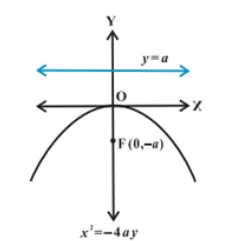

Parabola
| Equation | Graph | Focus | Length of LR | Equation of Directrix | Equation of Axis |
|---|---|---|---|---|---|
| \[y^2=4ax\] |  |
\[(a,0)\] | \[4a\] | \[x=-a\] | \[y=0\] |
| \[y^2=-4ax\] |  |
\[(-a,0)\] | \[4a\] | \[x=a\] | \[y=0\] |
| \[x^2=4ay\] |  |
\[(0,a)\] | \[4a\] | \[y=-a\] | \[x=0\] |
| \[x^2=-4ay\] |  | \[(0,-a)\] | \[4a\] | \[y=a\] | \[x=0\] |
| Equations of Parabola | Point of contact in terms of slope (m) | Equation of tangent in terms of slope (m) | Condition of Tangency |
|---|---|---|---|
| \[y^2=4ax\] | \[(\frac{a}{m^2},\frac{2a}{m})\] | \[y=mx+\frac{a}{m}\] | \[c=\frac{a}{m}\] |
| \[y^2=-4ax\] | \[(-\frac{a}{m^2},-\frac{2a}{m})\] | \[y=mx-\frac{a}{m}\] | \[c=-\frac{a}{m}\] |
| \[x^2=4ay\] | \[(2am,am^2)\] | \[y=mx-am^2\] | \[c=-am^2\] |
| \[x^2=-4ay\] | \[(-2am,am^2)\] | \[y=mx+am^2\] | \[c=am^2\] |
| Equations of Parabola | Point of contact in terms of slope (m) | Equation of normal in terms of slope (m) | Condition of Normality |
|---|---|---|---|
| \[y^2=4ax\] | \[(am^2,-2am)\] | \[y=mx-2am-am^3\] | \[c=-2am-am^3\] |
| \[y^2=-4ax\] | \[(am^2,2am)\] | \[y=mx+2am+am^3\] | \[c=2am+am^3\] |
| \[x^2=4ay\] | \[(-\frac{2a}{m},\frac{a}{m^2})\] | \[y=mx+2a+\frac{a}{m^2}\] | \[c=2a+\frac{a}{m^2}\] |
| \[x^2=-4ay\] | \[(\frac{2a}{m},-\frac{a}{m^2})\] | \[y=mx-2a-\frac{a}{m^2}\] | \[c=-2a-\frac{a}{m^2}\] |
| Equations of Parabola | Equation of Director Circle |
|---|---|
| \[y^2=4ax\] | \[x\,+a\space=\,0\] |
| \[y^2=-4ax\] | \[x\,-a\space=\,0\] |
| \[x^2=4ay\] | \[y\,+a\space=\,0\] |
| \[x^2=-4ay\] | \[y\,-a\space=\,0\] |